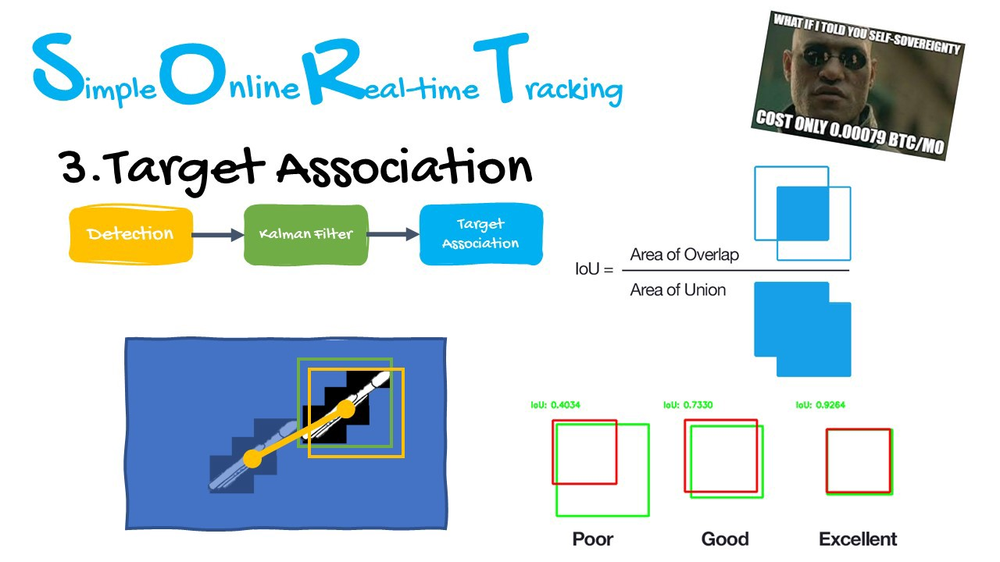

<app-header></app-header>

<div class="cont">
    <div class="row">
        <div class="col-sm">
            <vg-player>
                <video [vgMedia]="$any(media)" #media id="singleVideo" preload="auto" controls>
                    <source src="https://wellsr.com/python/assets/video/output_video.mp4 " type="video/mp4">
                </video>
            </vg-player>
        </div>
        <div class="col-sm">
            <div class="form-outline">
                <input class="form-control" id="formControlReadonly" type="text" value="How our algorithm works..."
                    aria-label="readonly input example" readonly />

            </div>
            <div class="container">
                <h1>YOLO</h1>

                <li>YOLO algorithm aims to predict a class of an object </li>
                <li>and the bounding box that defines the object location on the input image.</li>

                <li>It recognizes each bounding box using four numbers: Center of the bounding box ( ) Width of the box
                    (
                    )</li>
            </div>

        </div>

    </div>
    <div class="row">
        <div class="col-sm">
            <div class="container">
                <h1>SORT
                </h1>
                <p>
                    <li>Is a barebones implementation of a visual multiple object tracking framework
                        based on rudimentary data association and state estimation techniques.</li>
                    <li>It is designed for online tracking applications where only past
                        and current frames are available and the method produces object identities on the fly.
                    </li>
                    <li>While this minimalistic tracker doesn't handle occlusion or re-entering objects </li>
                    <li>its purpose is to serve as a baseline and testbed
                    </li>
                    <li>for the development of future trackers.</li>
                </p>

            </div>
        </div>
        <div class="col-sm">
            <section>
                
            </section>
        </div>
    </div>
</div>

<app-footer></app-footer>